¶ Here are some Cam Chain Adjuster views for you to study.
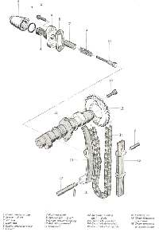 Kawasaki 400 Twin |
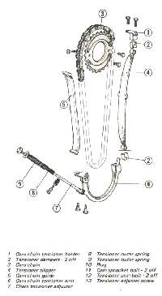 Honda 400 Four Cylinder |
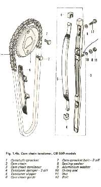 Honda 500 Four Cylinder |
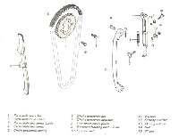 Honda 400 Twin |
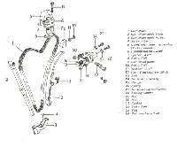 Suzuki 750cc Four Cylinder |
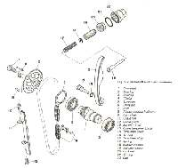 Yamaha 500cc Twin Cylinder |
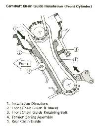 Kawasaki 700cc V-Twin Lower |
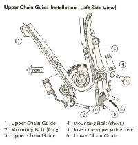 Kawasaki 700cc V-Twin Upper |
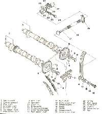 Yamaha 750cc Three Cylinder |
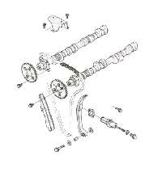 Kawasaki 1100cc Four Cylinder |

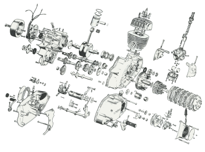 |
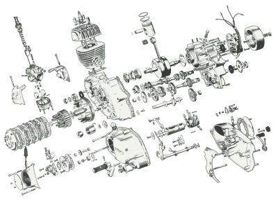 |
Copyright © 1999-2006 dansmc.com. All rights reserved.